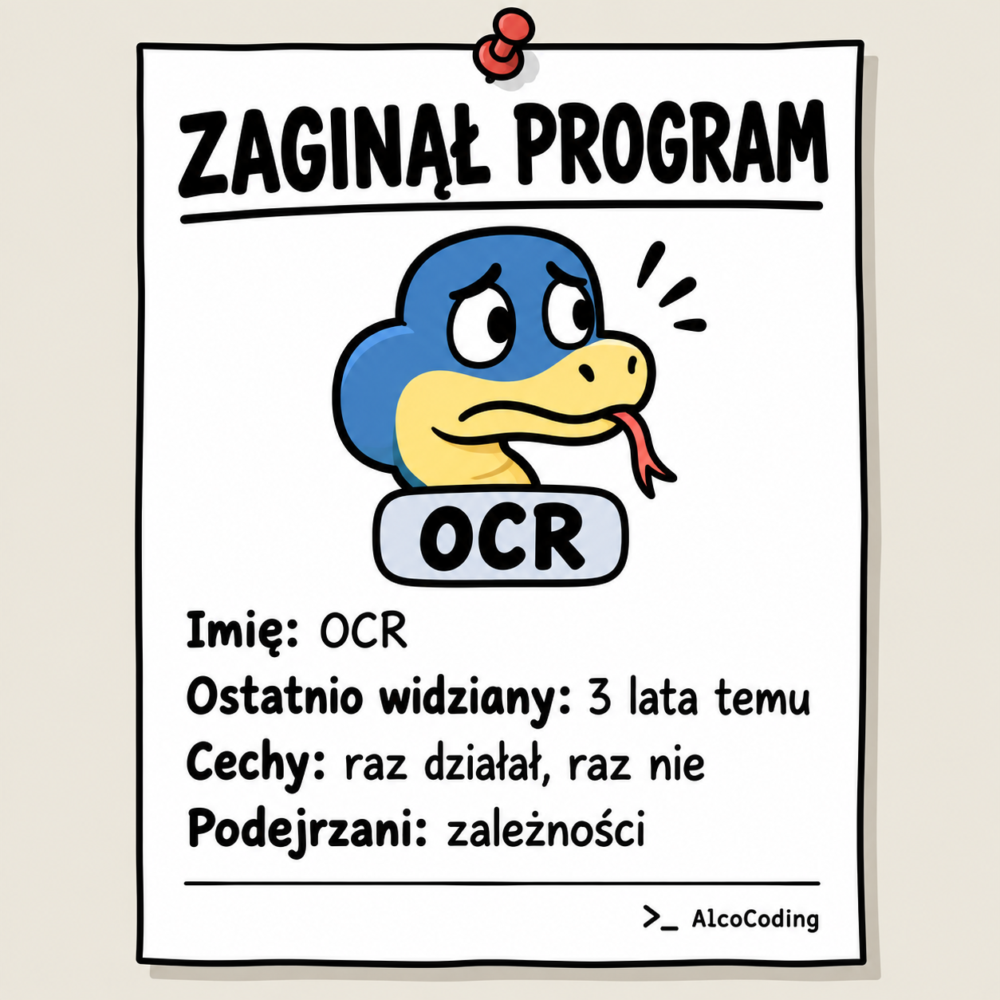

Zaginął Python
Kanonical: ten adres. Kopia na FB: zobacz post na Facebooku.

Zawsze chciałem programować. To znaczy: chciałem być tym człowiekiem, który siedzi przy komputerze, patrzy na czarny ekran z zielonym tekstem i wie, co się dzieje. Problem polegał na tym, że ja nie wiedziałem.
Przez lata udało mi się opanować podstawy HTML. Tak, wiem. HTML to nie jest język programowania. Wiem, bo programiści przypominają o tym z taką regularnością, jakby dostawali za to punkty w systemie lojalnościowym Stack Overflow.
Każda moja próba wejścia głębiej kończyła się tak samo. Instalowałem coś, coś nie działało, czytałem dokumentację, nie rozumiałem dokumentacji, więc otwierałem tutorial. Tutorial był z 2017 roku. Ktoś w komentarzu pisał: „u mnie działa”. U mnie nie działało.
Po trzech godzinach walki dochodziłem do momentu, w którym na ekranie pojawiało się: print("hello"). I wtedy czułem, że dotknąłem informatyki.
Potem przyszło AI i nagle okazało się, że nie muszę już rozumieć wszystkiego od początku. Wystarczy, że napiszę: „Daj mi program, który robi OCR na plikach z folderu”. AI po prostu podała kod, komendy oraz instrukcje zapisu. Czyli dawała mi mapę skarbów, a ja miałem łopatkę z plastiku.
AI powiedziała: „Najpierw zainstaluj biblioteki Pythona”. I tu, przyznam, spanikowałem. Zacząłem się zastanawiać, czy mam jeszcze kartę biblioteczną, czy biblioteki Pythona są w miejskiej, wojewódzkiej, czy raczej w dziale dziecięcym. Nie wiedziałem też, czy trzeba znać adres filii i czy obowiązuje tam cisza nocna.
Ale AI brzmiała pewnie, a pewność siebie w IT to połowa sukcesu. Druga połowa to kopiowanie komend do terminala i udawanie, że miało się plan. Więc kopiowałem. Terminal coś pisał. Pojawiały się czerwone rzeczy, potem żółte, ale były też zielone, więc uznałem, że idziemy w dobrą stronę.
Po kilku godzinach stało się coś niezwykłego. Program zadziałał.
Naprawdę.
Robił OCR na plikach we wskazanym folderze. Nie był piękny, nie był stabilny, nie miał interfejsu ani sensownej instrukcji. Ale był. Raz działał, raz nie działał, czyli zachowywał się jak większość produktów cyfrowych na etapie MVP (nie wiem co to znaczy). Byłem dumny. Przez jeden wieczór byłem programistą.
Następnego dnia chciałem uruchomić go ponownie i wtedy zaczęła się druga część kursu. Nie wiedziałem, gdzie jest, jak go włączyć, czy trzeba wejść do folderu ani czy powinienem aktywować jakieś środowisko. Nie wiedziałem nawet, czym jest środowisko. Wiedziałem tylko, że dzień wcześniej działało. A to, jak wiadomo, jest najważniejszy dowód techniczny.
Do dzisiaj ten program jest gdzieś w czeluściach mojego komputera. Może nadal tam leży. Może czeka, aż go odpalę i bedziemy racem OCR-ować. Może ma własne plany, własne traumy i własne niewyjaśnione błędy.
Minęły ponad 3 lata.
Myślicie, że powinienem zaktualizować zależności?